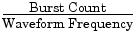

|
|

Execution Errors
-211Trigger ignored
A Group Execute Trigger (GET) or *TRG was received but the trigger was ignored. Make sure that you have selected the proper trigger source and verify that the sweep or burst mode is enabled.-223Too much data
An arbitrary waveform was specified that contains more than 65,536 waveform points. Verify the number of points in the DATA VOLATILE or DATA:DAC VOLATILE command.-221Settings conflict;
turned off infinite burst to allow immediate trigger source
An infinite count burst is allowed only when the external or bus (software) trigger source is selected. The burst count has been set to the maximum value (1,000,000 cycles).-221Settings conflict;
infinite burst changed trigger source to BUS
An infinite count burst is allowed only when the external or bus (software) trigger source is selected. Sending the BURS:NCYC INF command has automatically changed the trigger source from immediate to bus.-221Settings conflict;
burst period increased to fit entire burst
The number of cycles specified by the BURS:NCYC command takes priority over the burst period (as long as the burst period is not at its maximum value). The function generator has increased the burst period to accommodate the specified burst count or waveform frequency.-221Settings conflict;
burst count reduced
Since the burst period is currently at its maximum, the function generator has reduced the burst count to allow the specified waveform frequency.-221Settings conflict;
trigger delay reduced to fit entire burst
The function generator has reduced the trigger delay in order to maintain the current burst period and burst count. The trigger delay is the time between the receipt of the trigger and the start of the burst waveform.-221Settings conflict;
triggered burst not available for noise
You cannot use the noise function in the triggered burst mode. Noise is allowed only in the gated burst mode.-221Settings conflict;
amplitude units changed to Vpp due to high-Z load
The output units (VOLT:UNIT command) cannot be set to dBm if the output termination is currently set to "high impedance" (OUTP:LOAD command). The function generator has converted the units to Vpp.-221Settings conflict;
trigger output disabled by trigger external
When the external trigger source is selected (TRIG:SOUR EXT command), the function generator automatically disables the "trigger out" signal. The rear-panel Trig connector cannot be used for both operations at the same time (an externally-triggered waveform uses the same connector to trigger the sweep or burst).-221Settings conflict;
trigger output connector used by FSK
If you have enabled FSK and have selected the external trigger source (FSK:SOUR EXT command), the "trigger out" signal cannot be enabled (OUTP:TRIG ON command). The rear-panel Trig connector cannot be used for both operations at the same time.-221Settings conflict;
trigger output connector used by burst gate
If you have selected the gated burst mode (BURS:MODE GAT command) with burst enabled, the "trigger out" signal cannot be enabled (OUTP:TRIG ON command). The rear-panel Trig connector cannot be used for both operations at the same time.-221Settings conflict;
trigger output connector used by trigger external
When the external trigger source is selected (TRIG:SOUR EXT command), the function generator automatically disables the "trigger out" signal. The rear-panel Trig connector cannot be used for both operations at the same time.-221Settings conflict;
frequency reduced for user function
For arbitrary waveforms, the output frequency is limited to 25 MHz. When you change to the arbitrary waveform function (APPL:USER or FUNC:USER command) from a function that allows a higher frequency, the function generator will automatically adjust the frequency to 25 MHz.-221Settings conflict;
frequency reduced for pulse function
For pulse waveforms, the output frequency is limited to 50 MHz. When you change to the pulse function (APPL:PULS or FUNC:PULS command) from a function that allows a higher frequency, the function generator will automatically adjust the frequency to 50 MHz.-221Settings conflict;
frequency reduced for ramp function
For ramp waveforms, the output frequency is limited to 1 MHz. When you change to the ramp function (APPL:RAMP or FUNC:RAMP command) from a function that allows a higher frequency, the function generator will automatically adjust the frequency to 1 MHz.-221Settings conflict;
frequency made compatible with burst mode
For an internally-triggered burst, the output frequency is limited to a minimum of 2 mHz. The function generator has adjusted the frequency to be compatible with the current settings.-221Settings conflict;
frequency made compatible with FM
When FM is enabled, the output frequency of the carrier waveform is limited to a minimum of 5 Hz. The function generator has adjusted the frequency to be compatible with the current settings.-221Settings conflict;
burst turned off by selection of other mode or modulation
The function generator will allow only one modulation, sweep, or burst mode to be enabled at the same time. When you enable a modulation, sweep, or burst mode, all other modes are turned off.-221Settings conflict;
FSK turned off by selection of other mode or modulation
The function generator will allow only one modulation, sweep, or burst mode to be enabled at the same time. When you enable a modulation, sweep, or burst mode, all other modes are turned off.-221Settings conflict;
FM turned off by selection of other mode or modulation
The function generator will allow only one modulation, sweep, or burst mode to be enabled at the same time. When you enable a modulation, sweep, or burst mode, all other modes are turned off.-221Settings conflict;
AM turned off by selection of other mode or modulation
The function generator will allow only one modulation, sweep, or burst mode to be enabled at the same time. When you enable a modulation, sweep, or burst mode, all other modes are turned off.-221Settings conflict;
sweep turned off by selection of other mode or modulation
The function generator will allow only one modulation, sweep, or burst mode to be enabled at the same time. When you enable a modulation, sweep, or burst mode, all other modes are turned off.-221Settings conflict;
not able to modulate this function
The function generator cannot generate a modulated waveform using the pulse, noise, or dc voltage functions.-221Settings conflict;
not able to sweep this function
The function generator cannot generate a sweep using the pulse, noise, or dc voltage functions.-221Settings conflict;
not able to burst this function
The function generator cannot generate a burst using the dc voltage function.-221Settings conflict;
not able to modulate noise, modulation turned off
The function generator cannot generate a modulated waveform using the noise function. The selected modulation mode has been turned off.-221Settings conflict;
not able to sweep pulse, sweep turned off
The function generator cannot generate a sweep using the pulse function. The sweep mode has been turned off.-221Settings conflict;
not able to modulate dc, modulation turned off
The function generator cannot generate a modulated waveform using the dc voltage function. The selected modulation mode has been turned off.-221Settings conflict;
not able to sweep dc, modulation turned off
The function generator cannot generate a sweep using the dc voltage function. The sweep mode has been turned off.-221Settings conflict;
not able to burst dc, burst turned off
The function generator cannot generate a burst using the dc voltage function. The burst mode has been turned off.-221Settings conflict;
not able to sweep noise, sweep turned off
The function generator cannot generate a sweep using the noise function. The sweep mode has been turned off.-221Settings conflict;
pulse width decreased due to period
For a pulse waveform, the function generator will automatically adjust the waveform parameters in the following order as needed to generate a valid pulse: (1) edge time, (2) pulse width, and then (3) period.In this case, the function generator has decreased the pulse width to accommodate the specified period (the edge time is already at its minimum setting).-221Settings conflict;
edge time decreased due to period
For a pulse waveform, the function generator will automatically adjust the waveform parameters in the following order as needed to generate a valid pulse: (1) edge time, (2) pulse width, and then (3) period.In this case, the function generator has decreased the edge time to accommodate the specified period and preserve the pulse width setting.-221Settings conflict;
edge time decreased due to pulse width
For a pulse waveform, the function generator will automatically adjust the waveform parameters in the following order as needed to generate a valid pulse: (1) edge time, (2) pulse width, and then (3) period.In this case, the function generator has decreased the edge time to accommodate the specified pulse width.
Pulse Width > 1.6 X Edge Time-221Settings conflict;
amplitude changed due to function
In some cases, the amplitude limits are determined by the output units currently selected. This may occur when the units are Vrms or dBm due to the differences in crest factor for the various output functions. For example, if you output a 5 Vrms square wave (into 50 ohms) and then change to the sine wave function, the function generator will automatically adjust the output amplitude to 3.536 Vrms (upper limit for sine waves in Vrms).-221Settings conflict;
offset changed on exit from dc function
In the dc voltage function, the voltage level is controlled by adjusting the offset voltage (the current amplitude is ignored). When you select a different function, the function generator will adjust the offset voltage as needed to be compatible with the current amplitude setting.-221Settings conflict;
FM deviation cannot exceed carrier
The carrier frequency must always be greater than or equal to the frequency deviation. If you attempt to set the deviation to a value greater than the carrier frequency (with FM enabled), the function generator will automatically adjust the deviation to the maximum value allowed with the present carrier frequency.-221Settings conflict;
FM deviation exceeds max frequency
The sum of the carrier frequency and deviation must be less than or equal to the maximum frequency for the selected function plus 100 kHz (80.1 MHz for sine and square, 1.1 MHz for ramp, and 25.1 MHz for arbitrary waveforms). If you attempt to set the deviation to a value that is not valid, the function generator will automatically adjust it to the maximum value allowed with the present carrier frequency.-221Settings conflict;
frequency forced duty cycle change
If the square wave function is selected and you change to a frequency that cannot produce the current duty cycle, the duty cycle is automatically adjusted to the maximum value for the new frequency. For example, if you currently have the duty cycle set to 70% and then change the frequency to 60 MHz, the function generator will automatically adjust the duty cycle to 50% (upper limit for this frequency).Duty Cycle: 20% to 80% (frequency < 25 MHz)
40% to 60% (25 MHz < frequency < 50 MHz)
50% (frequency > 50 MHz)-221Settings conflict;
selected arb is missing, changing selection to default
If you delete an arbitrary waveform from non-volatile memory after storing the instrument state, the waveform data is lost and the function generator will not output the waveform when the state is recalled. The built-in "exponential rise" waveform is output in place of the deleted waveform.-221Settings conflict;
offset changed due to amplitude
The relationship between offset voltage and output amplitude is shown below. Vmax is the maximum peak voltage for the selected output termination (5 volts for a 50W load or 10 volts for a high-impedance load).
If the specified offset voltage is not valid, the function generator will automatically adjust it to the maximum dc voltage allowed with the amplitude specified.
|Voffset| < Vmax - -221Settings conflict;
-221Settings conflict;
amplitude changed due to offset
The relationship between output amplitude and offset voltage is shown below. Vmax is the maximum peak voltage for the selected output termination (5 volts for a 50W load or 10 volts for a high-impedance load).
If the specified amplitude not valid, the function generator will automatically adjust it to the maximum value allowed with the offset voltage specified.
Vpp < 2 X (Vmax - |Voffset|)-221Settings conflict;
low level changed due to high level
You can set the levels to a positive or negative value, but note that the high level must always be greater than the low level. If you specify a high level that is less than the low level, the function generator will automatically set the low level to be 1 mV less than the high level.-221Settings conflict;
high level changed due to low level
You can set the levels to a positive or negative value, but note that the high level must always be greater than the low level. If you specify a low level that is greater than the high level, the function generator will automatically set the high level to be 1 mV greater than the low level.
-222Data out of range;
value clipped to upper limit
The specified parameter is outside of the function generator's capability. The function generator has adjusted the parameter to the maximum value allowed. Example: PHAS 1000-222Data out of range;
value clipped to lower limit
The specified parameter is outside of the function generator's capability. The function generator has adjusted the parameter to the minimum value allowed. Example: PHAS -1000-222Data out of range;
pulse edge time limited by period
The specified edge time must fit within the specified period. The function generator will adjust the edge time as needed to accommodate the specified period.-222Data out of range;
pulse width limited by period; value clipped to ...
The specified pulse width must be less than the difference between the period and the edge time as shown below. The function generator will adjust the pulse width as needed to accommodate the specified period.
Pulse Width < Period - (1.6 X Edge Time)-222Data out of range;
pulse edge time limited by width; value clipped to ...
The specified edge time must fit within the specified pulse width as shown below. The function generator will adjust the edge time as needed to accommodate the specified pulse width.
Edge Time < 0.625 X Pulse Width-222Data out of range;
period; value clipped to ...
This generic message indicates that the waveform period has been limited to an upper or lower boundary.-222Data out of range;
frequency; value clipped to ...
This generic message indicates that the waveform frequency has been limited to an upper or lower boundary.-222Data out of range;
user frequency; value clipped to upper limit
This generic message indicates that the waveform frequency has been limited to an upper boundary due to the selection of the arbitrary waveform function (APPL:USER or FUNC:USER command).-222Data out of range;
ramp frequency; value clipped to upper limit
This generic message indicates that the waveform frequency has been limited to an upper boundary due to the selection of the ramp waveform function (APPL:RAMP or FUNC:RAMP command).-222Data out of range;
pulse frequency; value clipped to upper limit
This generic message indicates that the waveform frequency has been limited to an upper boundary due to the selection of the pulse waveform function (APPL:PULS or FUNC:PULS command).-222Data out of range;
burst period; value clipped to ...
This generic message indicates that the burst period has been limited to an upper or lower boundary.-222Data out of range;
burst count; value clipped to ...
This generic message indicates that the burst count has been limited to an upper or lower boundary.-222Data out of range;
burst period limited by length of burst; value clipped to upper limit
It is not possible to specify a burst period which is too short for the function generator to output with the specified burst count and frequency (see below). If the burst period is too short, the function generator will automatically adjust it as needed to continuously
re-trigger the burst.
Burst Period >  + 200 ns-222Data out of range;
burst count limited by length of burst; value clipped to lower limit
If the Immediate trigger source is selected (TRIG:SOUR IMM command), the burst count must be less than the product of the burst period and the waveform frequency as shown below.
Burst Count < Burst Period X Waveform Frequency-222Data out of range;
amplitude; value clipped to ...
This generic message indicates that the waveform amplitude has been limited to an upper or lower boundary.-222Data out of range;
offset; value clipped to ...
This generic message indicates that the offset voltage has been limited to an upper or lower boundary.-222Data out of range;
frequency in burst mode; value clipped to ...
This generic message indicates that the frequency has been limited to an upper or lower boundary as dictated by the burst period.-222Data out of range;
frequency in FM; value clipped to ...
This generic message indicates that the carrier frequency has been limited to a lower boundary as determined by the FM:DEV command. The carrier frequency must always be greater than or equal to the frequency deviation.-222Data out of range;
marker confined to sweep span; value clipped to ...
This generic message indicates that the specified marker frequency is outside the range of the start frequency and stop frequency. The marker frequency must be between the specified start frequency and stop frequency. If you attempt to set the marker frequency to a frequency not in this range, the function generator will automatically set the marker frequency equal to the start frequency or stop frequency (whichever is closer). This error is generated only when both the sweep mode and the marker frequency are enabled.-222Data out of range;
pulse width; value clipped to ...
This generic message indicates that the desired pulse width is limited to an upper or lower boundary which is usually dictated by the period of the pulse waveform.-222Data out of range;
pulse edge time; value clipped to ...
This generic message indicates that the desired edge time is limited to an upper or lower boundary which is usually dictated by the pulse width and / or period of the pulse waveform.-222Data out of range;
FM deviation; value clipped to ...
This generic message indicates that the desired FM deviation is limited to a lower or upper boundary as set by the current function's frequency.-222Data out of range;
trigger delay; value clipped to upper limit
The trigger delay is limited to a maximum of 85 seconds. The trigger delay sets the time between the receipt of the trigger and the start of the burst waveform (used in triggered burst mode only).-222Data out of range;
trigger delay limited by length of burst; value clipped to upper limit
The sum of the specified trigger delay and the time required to complete the burst waveform must be less than the period of the burst.-222Data out of range;
duty cycle; value clipped to ...
The duty cycle is limited to values between 20% and 80% when the frequency is less than 25 MHz.Duty Cycle: 20% to 80% (frequency < 25 MHz)
40% to 60% (25 MHz < frequency < 50 MHz)
50% (frequency > 50 MHz)-222Data out of range;
duty cycle limited by frequency; value clipped to upper limit
The duty cycle is limited to 50% when the frequency is greater
than 50 MHz.Duty Cycle: 20% to 80% (frequency < 25 MHz)
40% to 60% (25 MHz < frequency < 50 MHz)
50% (frequency > 50 MHz)-313Calibration memory lost;
memory corruption detected
The non-volatile memory used to store the function generator's calibration constants has detected a checksum error. This error may be the result of a device failure or extreme conditions such as lightning or strong magnetic fields.-314Save/recall memory lost;
memory corruption detected
The non-volatile memory used to store instrument states has detected a checksum error. This error may be the result of a device failure or extreme conditions such as lightning or strong magnetic fields.-315Configuration memory lost;
memory corruption detected
The non-volatile memory used to store the function generator's configuration settings (i.e., remote interface settings) has detected a checksum error. This error may be the result of a device failure or extreme conditions such as lightning or strong magnetic fields.-350Queue overflow
The error queue is full because more than 20 errors have occurred. No additional errors are stored until you remove errors from the queue. The error queue is cleared by the *CLS (clear status) command or when the power is cycled. The errors are also cleared when you read the queue. The error queue is not cleared by an instrument reset (*RST command).-361Parity error in program message
This error is most likely to occur when the function generator's parity setting (RS-232 interface) does not match the computer's parity setting. This error may also occur in the presence of noise on the RS-232 cable.-362Framing error in program message
This error is most likely to occur when the number of stop bits for the computer (RS-232 interface) does not match the function generator's setting (fixed at 1 stop bit).-363Input buffer overrun
Too many characters have been sent to the function generator while configured to use the RS-232 interface. This error typically occurs when you have selected no handshaking of data between the computer and the function generator. To avoid this error, select one of the handshake modes available for the 33250A (see "Remote Interface Configuration" on page 118 for more information).
|
Quadralay Corporation http://www.webworks.com Voice: (512) 719-3399 Fax: (512) 719-3606 sales@webworks.com |
|
|